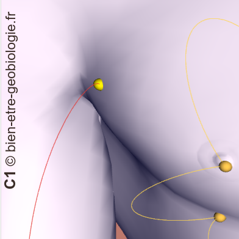
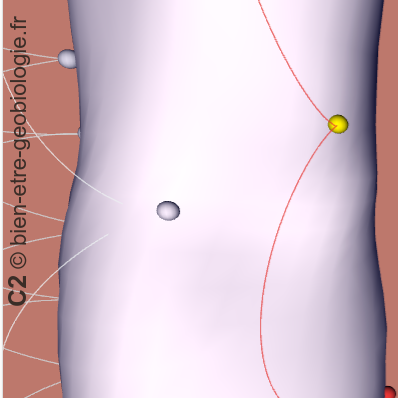
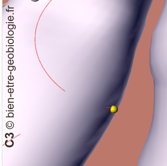
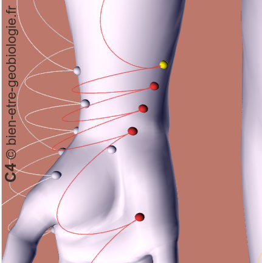
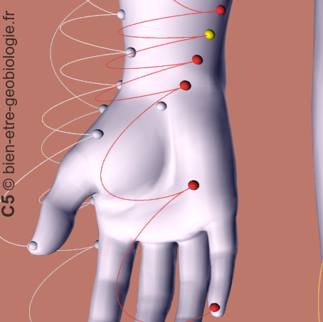
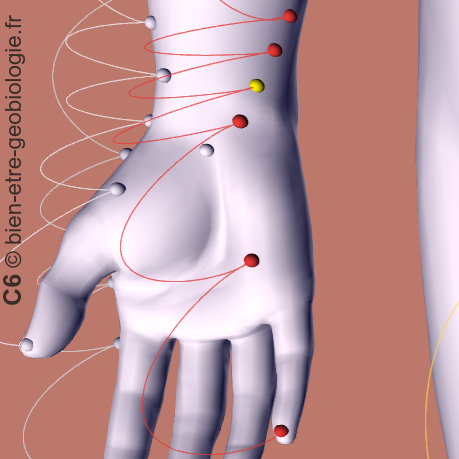
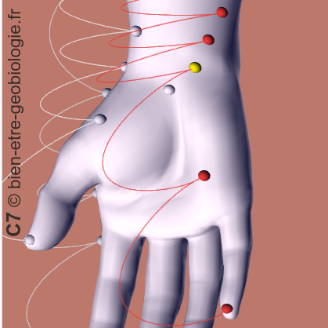
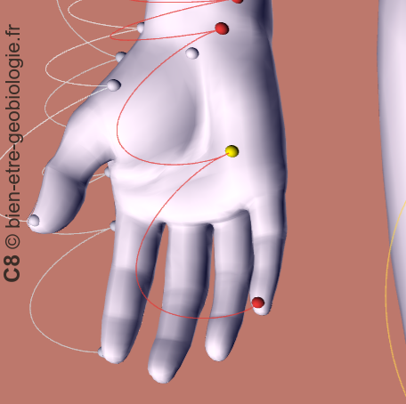
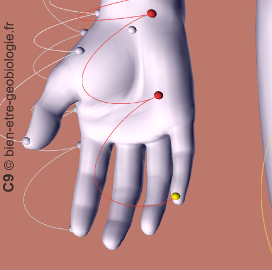

C1 – Choc émotionnel profond non intégré

Lecture Bioénergétique Globale
- Traumatisme émotionnel ancien
- Tristesse profonde ou sidération
- Oppression du centre thoracique
Soin Radiesthésique
- Lecture : Blocage du champ émotionnel profond
- Libération : Décompression progressive de la mémoire émotionnelle
Soin Adapté à l'Enfant
- Présence : Douce, sécurisante
- Respiration : Lente et accompagnée
Résultats Post-Soin
- Centre émotionnel : Moins comprimé
- État intérieur : Plus ouvert
C2 – Agitation émotionnelle liée à la colère retenue

Lecture Bioénergétique Globale
- Émotions intenses non exprimées
- Irritabilité latente
- Tension interne persistante
Soin Radiesthésique
- Lecture : Excès vibratoire du centre émotionnel
- Libération : Régulation et apaisement énergétique
Soin Adapté à l'Enfant
- Approche : Calmante et rassurante
- Respiration : Souffle lent guidé
Résultats Post-Soin
- Agitation : Atténuée
- Émotion : Plus stable
C3 – Fermeture émotionnelle relationnelle

Lecture Bioénergétique Globale
- Difficulté à donner ou recevoir émotionnellement
- Retrait affectif
- Protection excessive
Soin Radiesthésique
- Lecture : Fermeture du champ relationnel
- Libération : Réouverture progressive du lien émotionnel
Soin Adapté à l'Enfant
- Contact : Bras et coude en douceur
- Intention : Sécurité affective
Résultats Post-Soin
- Relation : Plus fluide
- Présence émotionnelle : Restaurée
C4 – Instabilité émotionnelle et manque d’ancrage affectif

Lecture Bioénergétique Globale
- Sensibilité excessive
- Variations émotionnelles rapides
- Difficulté à se poser intérieurement
Soin Radiesthésique
- Lecture : Instabilité de la présence intérieure
- Libération : Stabilisation et ancrage émotionnel
Soin Adapté à l'Enfant
- Rythme : Lent et sécurisant
- Contact : Continu et rassurant
Résultats Post-Soin
- Émotion : Plus stable
- Présence : Apaisée
C5 – Difficulté à exprimer les émotions

Lecture Bioénergétique Globale
- Émotions retenues
- Paroles non exprimées
- Frustration intérieure
Soin Radiesthésique
- Lecture : Blocage du lien émotion–expression
- Libération : Fluidification de l’expression intérieure
Soin Adapté à l'Enfant
- Jeu : Expression libre et symbolique
- Encouragement : Parole et geste
Résultats Post-Soin
- Expression : Facilitée
- Émotion : Plus fluide
C6 – Surcharge émotionnelle et fatigue intérieure

Lecture Bioénergétique Globale
- Épuisement émotionnel
- Sensibilité accrue
- Difficulté à récupérer
Soin Radiesthésique
- Lecture : Surcharge du centre émotionnel
- Libération : Allègement et apaisement énergétique
Soin Adapté à l'Enfant
- Repos : Prioritaire
- Contact : Très doux
Résultats Post-Soin
- Fatigue : Allégée
- Calme : Retrouvé
C7 – Anxiété et agitation intérieure

Lecture Bioénergétique Globale
- Anxiété
- Agitation mentale
- Troubles du sommeil
Soin Radiesthésique
- Lecture : Déséquilibre du champ émotionnel
- Libération : Apaisement profond et recentrage
Soin Adapté à l'Enfant
- Pression : Douce au poignet
- Rituel : Calmants répétitifs
Résultats Post-Soin
- Sommeil : Amélioré
- Présence intérieure : Apaisée
C8 – Débordement émotionnel

Lecture Bioénergétique Globale
- Hyperémotivité
- Difficulté à contenir
- Sensation de trop-plein
Soin Radiesthésique
- Lecture : Excès vibratoire du centre émotionnel
- Libération : Régulation et canalisation
Soin Adapté à l'Enfant
- Cadre : Sécurisant
- Respiration : Guidée
Résultats Post-Soin
- Émotion : Canalisée
- Énergie : Régulée
C9 – Difficulté à se relier émotionnellement au monde

Lecture Bioénergétique Globale
- Retrait émotionnel
- Difficulté de connexion
- Sensibilité des extrémités
Soin Radiesthésique
- Lecture : Affaiblissement du lien émotion–extérieur
- Libération : Réouverture progressive à l’environnement
Soin Adapté à l'Enfant
- Toucher : Main et doigt en douceur
- Jeu : Interaction relationnelle
Résultats Post-Soin
- Connexion : Retrouvée
- Centre émotionnel : Plus ouvert